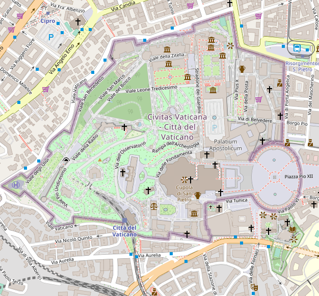
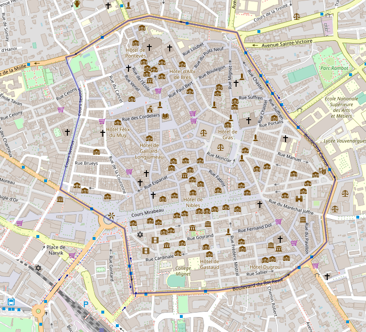
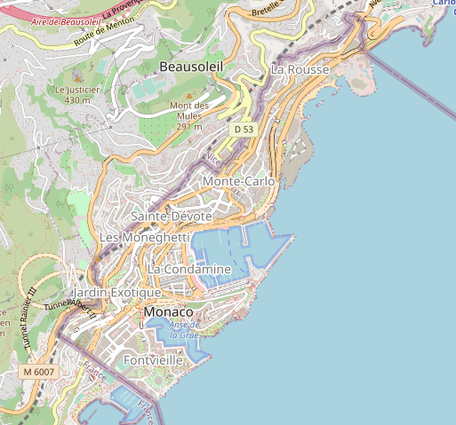
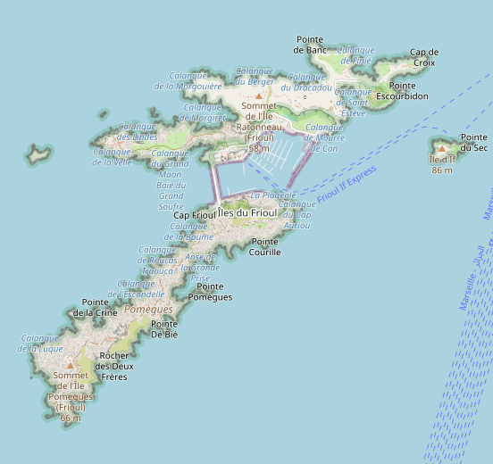

MXTHL3
Micro-États et comparaisons
Vatican
 
Vatican: 0,44 km² < Centre-ville d'Aix-en-Provence: 0,68 km²
Le Vatican est une création italienne (accords du Latran, 1929) pour pallier à la question romaine (suite à la prise de Rome 59 ans plus tôt qui acheva l'unification italienne et marqua la fin des États Pontificaux).
Monaco
 
Monaco: 2,02 km² ~ Îles du Frioul (Marseille): 1,935 km²
Existante depuis le Moyen Âge, Monaco ne faisait pas partie du comté de Nice lors de l'annexion de celui-ci à la France en 1861. Son territoire comprenait avant les communes de Menton et Roquebrune-Cap-Martin, et était douze fois plus grand.